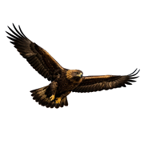

Fågelobservationer
📋 Dagslista
📊 Statistik
🥚 Häckning
👤 Rapportör
Ansluter…
🔐 Anslut till Artportalen
Logga in med ditt SLU-konto för att se skyddade arter.
E-postadress
(SLU-konto)
Lösenord
Avbryt
Anslut
←
–
→
Idag
– Hela länet –
Lager:
🗼 OSM-torn
Kontrollerar proxyanslutning…
📱
Lägg till som app på hemskärmen
Tryck på
Dela-knappen
⎙
längst ned i Safari, välj sedan
"Lägg till på hemskärmen"
– då fungerar sidan som en riktig app utan adressfält.
✕
↑ Gå till toppen